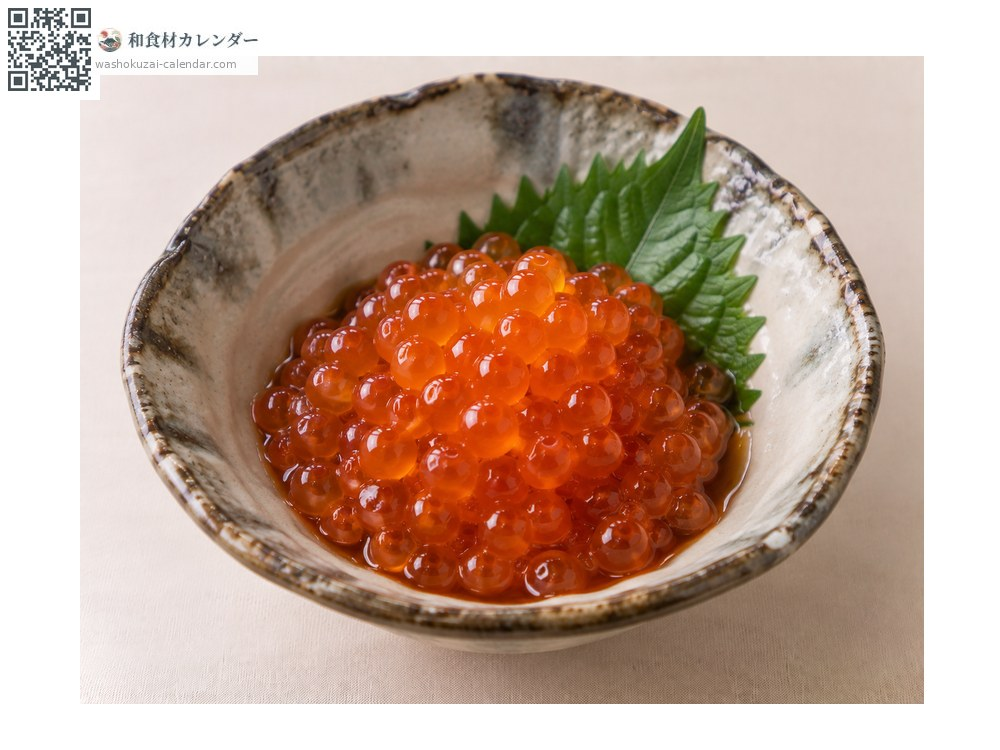
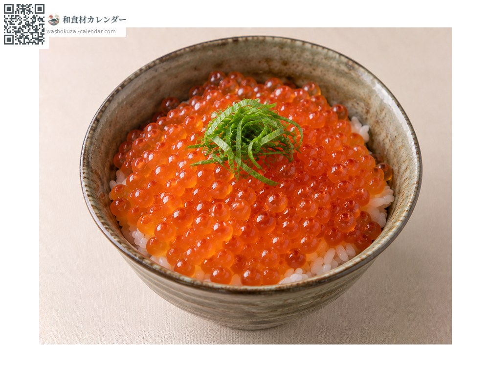
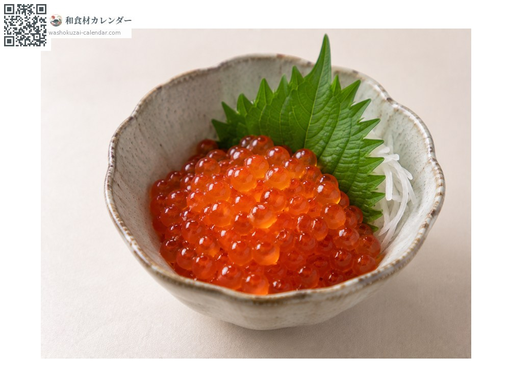
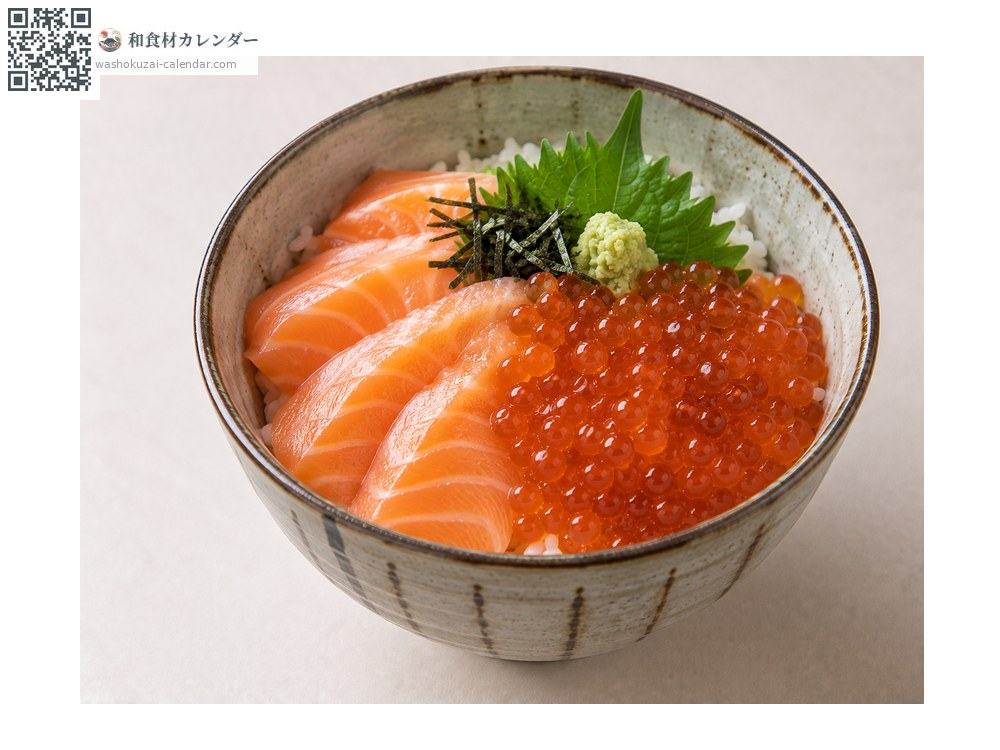

อาหารทะเล
อิคุระ (ไข่ปลาแซลมอน)
イクラ いくら ikura
ชื่ออื่นikura
อร่อยที่สุดในเดือน ก.ย., ต.ค., พ.ย.

ช่วงที่อร่อยที่สุด
ม.ค.
ก.พ.
มี.ค.
เม.ย.
พ.ค.
มิ.ย.
ก.ค.
ส.ค.
ก.ย.
ต.ค.
พ.ย.
ธ.ค.
ช่วงอร่อยที่สุดมีจำหน่าย
วิธีปรุง

ดองซีอิ๊ว
เมนูมาตรฐาน หมักสาเกกับซีอิ๊ว

ข้าวหน้าไข่ปลาแซลมอน
ราดบนข้าวเยอะ ๆ

ดองเกลือ
หมักเกลืออย่างเดียว รสวัตถุดิบเด่นชัด

ข้าวหน้าแซลมอนกับไข่ปลาแซลมอน
ใส่ทั้งเนื้อแซลมอนและไข่แซลมอน
วิธีเลือก
เม็ดขนาดเท่ากัน ตึงและเป็นมันวาว หลีกเลี่ยงเม็ดที่แตก
วิธีเก็บรักษา
แบบดองซีอิ๊วแช่เย็นได้ 3-4 วัน แบ่งใส่ถุงแช่แข็งได้
แหล่งผลิตหลัก
เกร็ดน่ารู้
เม็ดที่แยกออกมาเรียก อิคุระ ส่วนที่ยังติดรังไข่เรียก สึจิโกะ คำว่าอิคุระมาจากภาษารัสเซียที่แปลว่าไข่ปลา